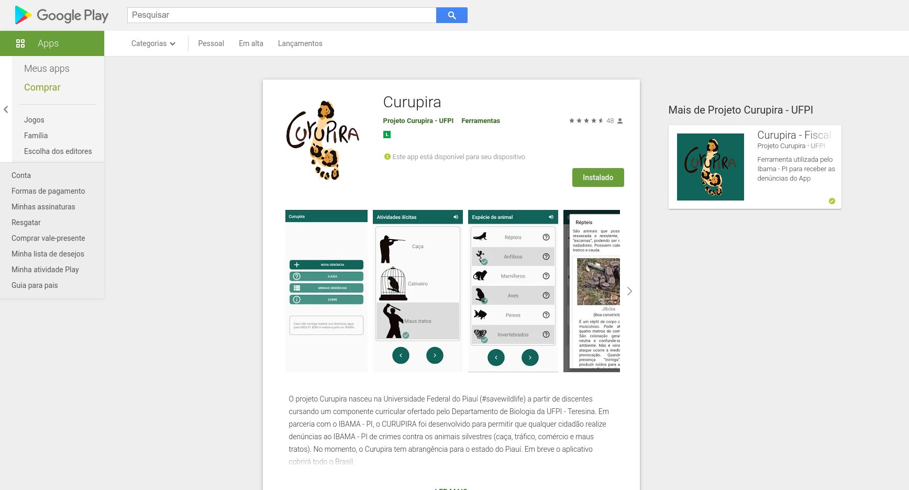

Portfólio
-

App Curupira
Aplicativo mobile para auxiliar no envio de denúncias envolvendo crimes contra animais ao órgão responsável.
Criado em: novembro de 2020
Aplicativo mobile para auxiliar no envio de denúncias envolvendo crimes contra animais ao órgão responsável.
Criado em: novembro de 2020